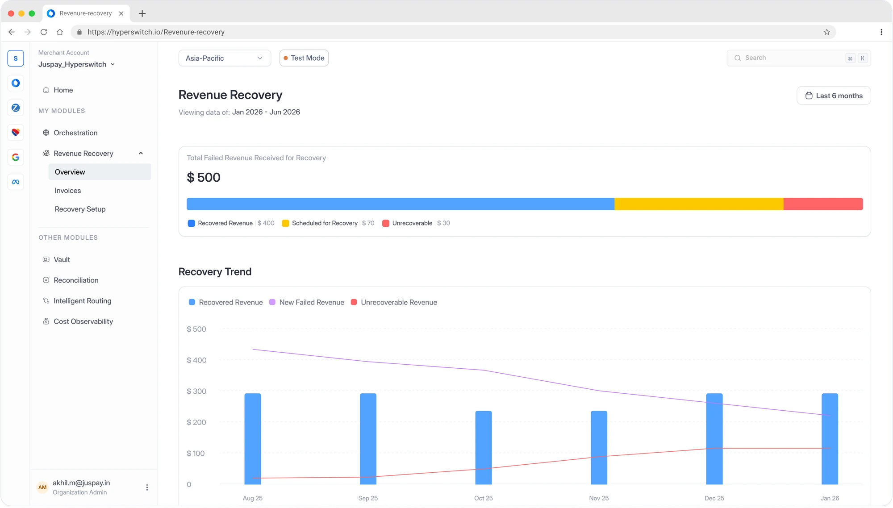
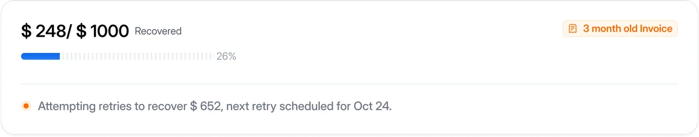
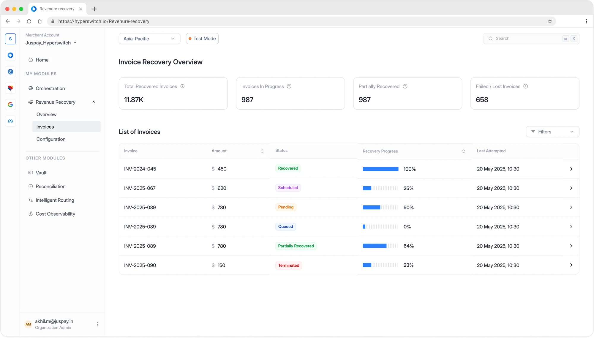
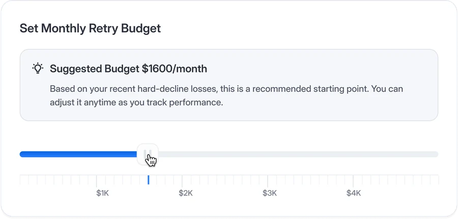
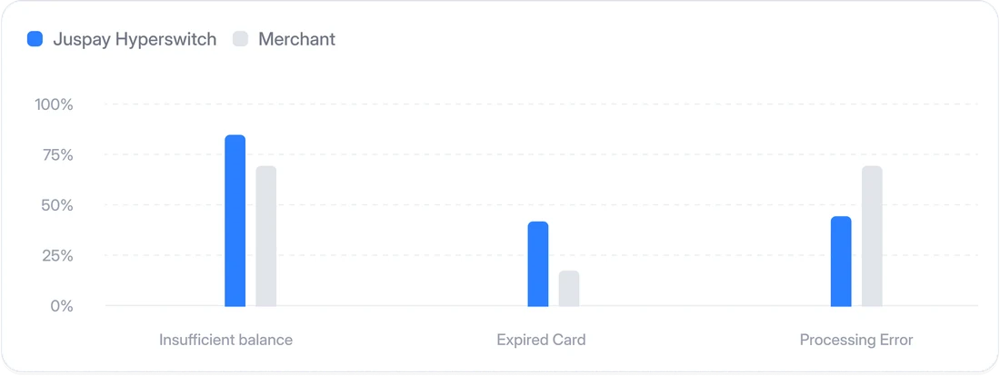
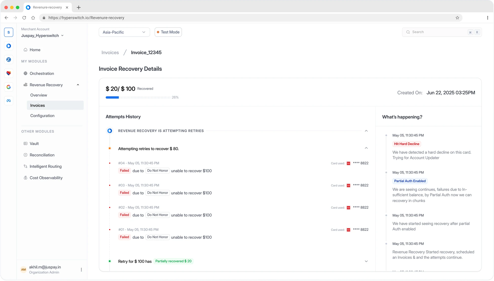
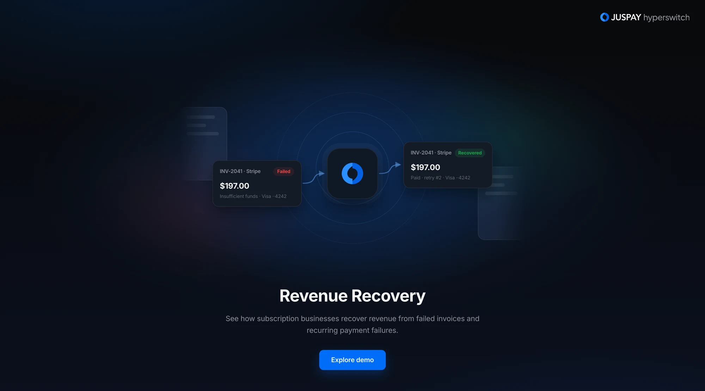

Product design·Juspay Hyperswitch·2025
Revenue Recovery
Designed the Revenue Recovery product from 0→1, shaping the end-to-end experience and translating a complex recovery system into a clear, intuitive experience for merchants. Also collaborated with the Business Development team to create interactive product demos for merchant conversations.
Recover lost subscription revenue with intelligent retries
Recover failed recurring payments with smart retry strategies that determine when and how to retry helping you reduce involuntary churn and recover more revenue.






Interactive demo
See it recover a payment
Built for the business team, to help them walk merchants through the idea: failed invoices flowing in, getting retried, and coming back as revenue, before the product was in their hands.
Try the interactive demo